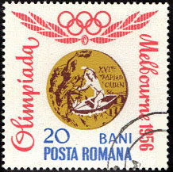
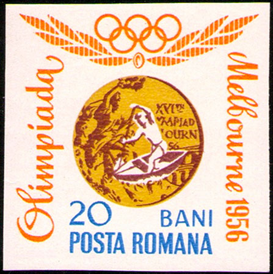
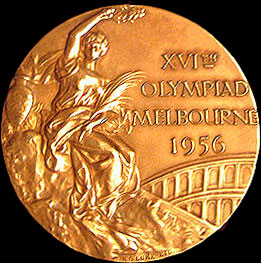
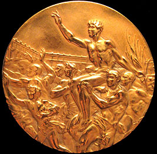
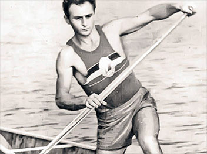
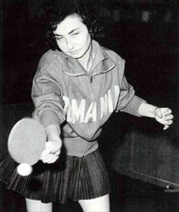
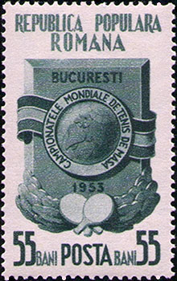
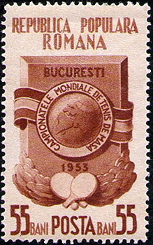
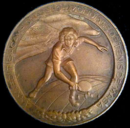
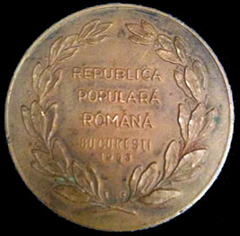

| Created: 30 oct. 2013. Revised: 29 sept. 2015 . Copyright © 2013 - 2015 by Victor Manta, Switzerland All rights reserved worldwide. |
|
MARI CAMPIONI, SORTIŢI DEPLINEI UITĂRI
Victor MANTA, PWO
Am părăsit România comunistă în anul 1983. Acesta este motivul pentru care informaţiile apărute după 1989 în presa românească liberă, legate de soarta marilor campioni români despre care scriu în acest articol, mi-au parvenit cu întârziere. Prezentul articol l-am scris sub impresia nemijlocită a celor aflate şi reprezintă omagiul meu personal, de amator al sportului, de filatelist şi de jurnalist filatelic, adus unor mari campioni.
În timp ce mă documentam pentru articolul „O întâlnire, după 50 de ani, cu tinereţea mea filatelică” (Sursa) am dat, în catalogul Michel, de un nume de campion olimpic român care îmi era necunoscut: Leon Rotman.
Acest nume a apărut în legătură cu timbrul dantelat Mi. Nr. 3245 şi nedantelat Mi. Nr. 3253, ambele din seria Câştigători români ai medaliilor de aur la Jocurile Olimpice, apărută pe 30 noiembrie 1964, timbre care, cel puţin în teorie, erau dedicate reuşitei acestui sportiv.

Am reprodus ambele timbre, precum şi, deoarece apar pe ele, imaginile medaliilor olimpice de aur cu care au fost răsplătiţi campionii la Olimpiada de la Melbourne, în anul 1956.



Am căutat informaţii pe Web şi am aflat, cu surprindere, că Leon Rotman fusese medaliat la Melbourne nu cu una, ci cu două medalii de aur, deoarece cucerise acolo două titluri, la cele două probe de canoe la care a participat. El a devenit atunci primul dublu campion olimpic român din istorie.

Motivul pentru care marele campion a fost dat uitării ni-l spune chiar el, într-un interviu dat Gazetei Sporturilor în 2010, la vârsta de 76 de ani. „Bătrînul canoist acuză: "Cînd n-am mai putut să vîslesc, n-am fost lăsat să antrenez nici la club, nici la lot. Pînă atunci fusesem un bun român, după aceea devenisem doar un evreu de care se fereau toţi"” (Sursa).Această trista poveste m-a dus cu gândul la numele unei campioane despre care auzisem câte ceva în fragedă tinereţe, nume care a dispărut însă rapid din presa românească a anilor 1960 - 1990: Angelica Rozeanu - Adelstein. Şi aici am avut o surpriză, şi anume să aflu că ea a cucerit nu mai puţin de 17 titluri mondiale la tenis de masă. Angelica Rozeanu a fost, de altfel, prima sportiva româncă din istorie care a devenit campioană mondială. Ea şi-a atins vârful carierei la Campionatele Mondiale de tenis de masă care s-au desfăşurat chiar în Bucureşti, în 1953, unde a câştigat cele 4 titluri supreme la toate probele la care a concurat.

Mai jos reproduc cele două timbre emise de Poşta Română pentru a comemora acea memorabilă competiţie, precum şi, pentru simetrie, medaliile care au fost înmânate învingătorilor.




De ce regimul comunist a dat-o uitării şi pe Angelica Rozeanu, aceasta după ce ea a fost nu numai o mare sportivă, dar ajunsese preşedintă a Comisiei Române de tenis de masă şi laureată a Ordinului Muncii? Aflăm de pe Web (Sursa) că: "Plecata in 1960 din tara din cauza problemelor aduse de originea sa evreiasca, Angelica Rozeanu traieste acum in Israel”. Iar marea campioană ne spune în acelaşi articol, apărut în 2004, în cadrul unui interviu: "Am lasat totul balta si am plecat. M-a durut mult ca am fost retrasa din sport. Nu mai aveam voie sa pun mana pe paleta. Am luat-o cu mine doar pe fiica mea. De fapt pentru ea am fugit”.
Iată deci doi mari campioni cu o soarta asemănătoare, cauzată de un regim comunist care a avut grijă sa-şi ascundă persecuţiile (suplimentare!) împotriva minorităţilor sub o avalanşă propagandistică despre deplina egalitate în drepturi a tuturor cetăţenilor ţării. Libertatea presei, care a fost una dintre consecinţele căderii acestui regim, ne-a permis să aflăm mai multe despre aceşti mari campioni care erau sortiţi uitării şi să începem să le cinstim numele şi performanţele sportive aşa cum o merită pe deplin.
Despre autor: Victor MANTA, născut în 1944, licenţiat al Facultăţii de Fizică, Bucureşti. Premiat multiplu pentru site -urile sale filatelice ( http://marci-postale.com , http://www.artonstamps.org/ , http://reds-on.postalstamps.biz ). Fondator şi preşedinte al Philatelic Webmasters Organization ( http://pwmo.org ).
Acest articol a apărut în revista The Israel Philatelist, Vol. 65, Nr. 1, p. 12 - 14.
| Created: 30 oct. 2013. Revised: 29 sept. 2015 . Copyright © 2013 - 2015 by Victor Manta, Switzerland All rights reserved worldwide. |
|